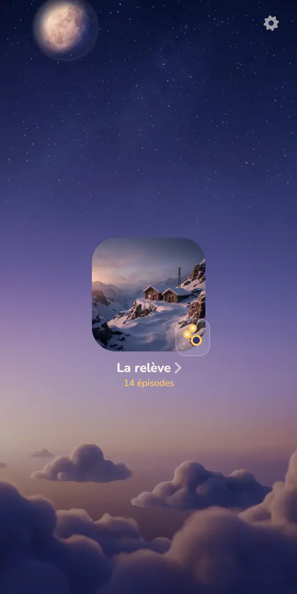
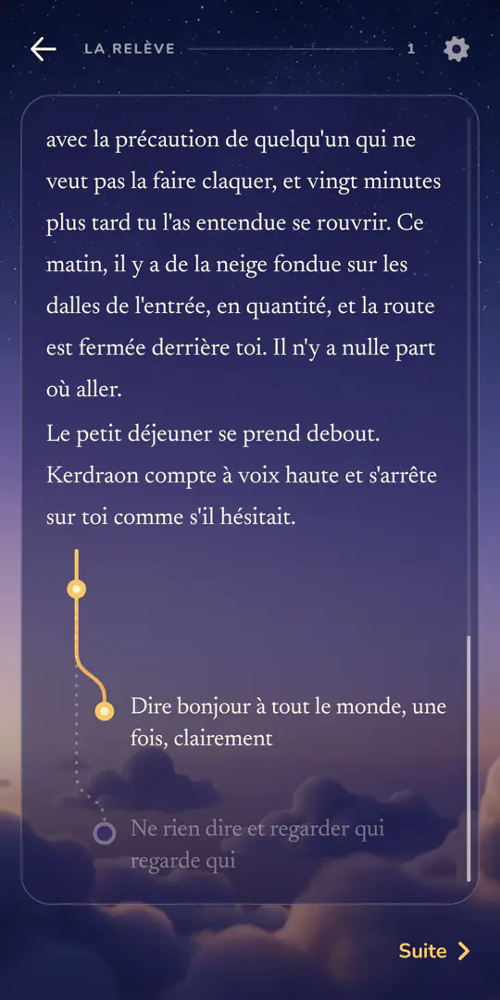
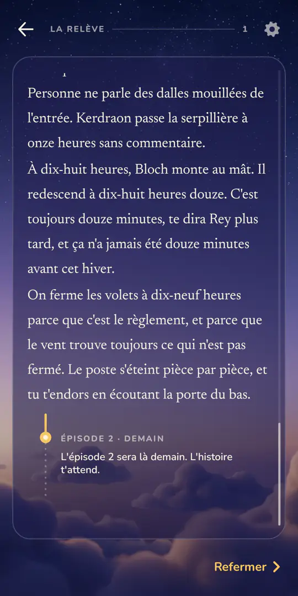
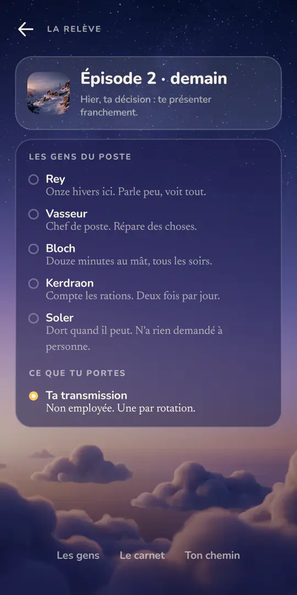
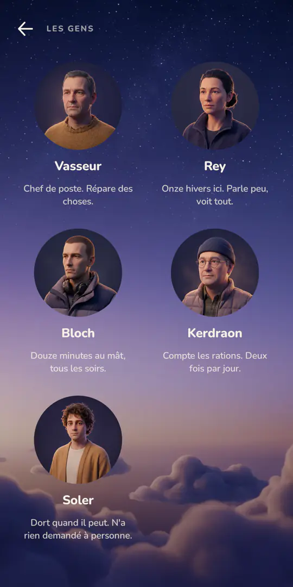

À suivre
Un roman à choix, un épisode par jour. Tu décides, l'histoire attend demain.

Ce que l'app fait, et rien d'autre
-
Un épisode par jour
Deux à quatre minutes. Il se termine sur une décision : tu la prends, et l'histoire se referme jusqu'au lendemain.
-
Rater un jour ne fait rien perdre
L'histoire attend, dans l'état où tes choix l'ont mise.
-
Aucun retour en arrière
Un choix par épisode, au pied du texte. Le poids des décisions est le produit.
-
Ton chemin, les gens, le carnet
Le dessin de tes décisions, jamais celles que tu n'as pas prises. Ce que tu as lu, seulement ce que tu as lu.
-
« La relève », la première histoire
Un poste de garde en haute montagne, coupé par la neige. Six personnes. La relève monte dans quatorze jours. Tu es arrivé hier : le seul que personne ne connaît, donc le seul devant qui on parle encore. Quatorze épisodes, cinq fins.
Comment ça marche
Tu ouvres l'épisode du jour : deux à quatre minutes de lecture.
Au pied du texte, une décision. Tu la prends, l'épisode se referme.
Demain, l'épisode suivant t'attend, dans l'état où ton choix a mis l'histoire.
Captures d'écran




Tes données
L'application a été écrite pour ne rien savoir de toi. Elle ne demande aucun compte, aucune adresse, aucun nom. Elle ne contient ni publicité, ni outil de mesure d'audience, ni service tiers, et elle ne fait aucune requête réseau : les histoires sont embarquées dans l'application elle-même.
Sur ton téléphone, elle garde tes choix de lecture, avec le jour où tu as lu chaque épisode, et deux réglages : la taille du texte et l'heure à laquelle un nouvel épisode devient disponible. Désinstaller l'application efface tout ça.
Les autorisations demandées
Aucune. Le manifeste de l'application n'en déclare pas une.
La sauvegarde Android
Comme la plupart des applications, « À suivre » laisse Android inclure ses données dans la sauvegarde de l'appareil, chiffrée avec les identifiants de l'appareil. C'est Android qui la fait, pas l'application ; elle se désactive dans les réglages du téléphone, sous Sauvegarde.
Questions
Et si je rate un jour ?
Rien n'est perdu. L'histoire attend, dans l'état où tes choix l'ont mise, et l'épisode t'attend jusqu'à ce que tu l'ouvres.
À quelle heure arrive l'épisode suivant ?
À quatre heures du matin, heure de ton téléphone, pas à minuit. L'heure se change dans les réglages, « Le jour change à » ; le changement vaut à partir du prochain épisode.
Peut-on revenir en arrière ?
Non. Un choix par épisode, et il tient. Ton chemin dessine tes décisions, jamais celles que tu n'as pas prises.
Et quand l'histoire est finie ?
Elle se relit depuis le début, et ton premier chemin reste dessiné sous le nouveau. Tu peux aussi emporter l'histoire : le texte tel que tes choix l'ont écrit.
Est-ce un jeu ?
Non. Pas de score, pas de dé, pas de partie. Un récit qu'on lit, et qui change selon ce qu'on y décide.